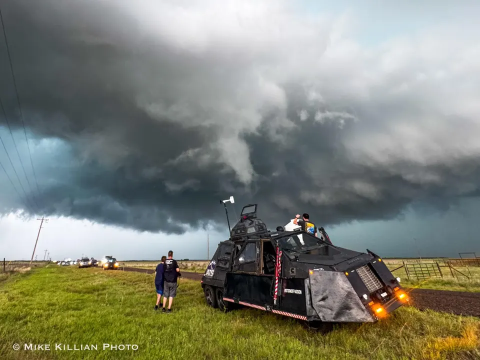
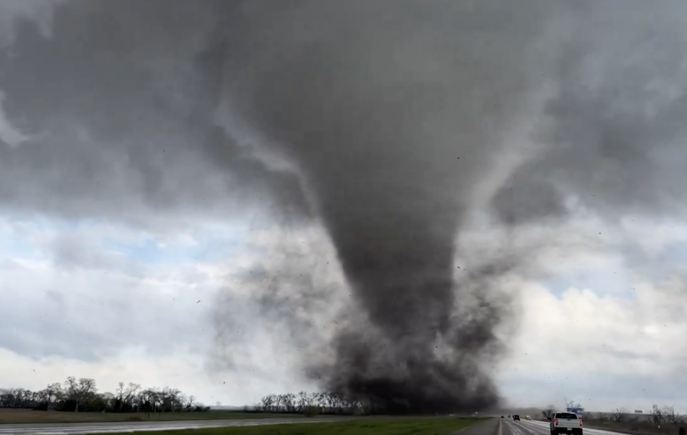

Météorologie
Découvre les bases de l'atmosphère, de la température, de l'humidité et du vent.
Explorer →MANUEL DE MÉTÉOROLOGIE
Comprendre les orages. Observer les supercellules. Étudier les tornades. Et apprendre à lire le ciel.

BIENVENUE DANS STORMLAB
STORMLAB est un espace consacré à la météorologie, aux phénomènes atmosphériques violents et à leur observation.
Découvrir le manuel →01 • EXPLORER
Découvre les bases de l'atmosphère, de la température, de l'humidité et du vent.
Explorer →Comprends leur formation, leur structure et leur évolution.
Explorer →Découvre les orages organisés autour d'un courant ascendant rotatif.
Explorer →Étudie leur formation, leur structure et leurs dangers.
Explorer →Découvre les phénomènes électriques associés aux orages.
Explorer →Apprends à lire les observations radar et à suivre les cellules.
Explorer →Observe les systèmes météorologiques depuis l'espace.
Explorer →Analyse les paramètres atmosphériques grâce aux cartes météorologiques.
Explorer →02 • STORM CHASING
Entre dans l'univers du storm chasing : observation, météorologie, préparation, véhicules et chasseurs de tempêtes.
🚗 Découvrir le Storm Chasing
STORMLAB • CHASSEURS
Découvre les chasseurs de tempêtes, leur matériel, leur préparation et leur manière d'observer les phénomènes.
👥 Découvrir les chasseurs03 • VÉHICULES
Découvre l'univers des véhicules conçus pour l'observation des tempêtes.
Découvrir →Explore l'univers d'un célèbre storm chaser.
Découvrir →Découvre les différents profils des chasseurs de tempêtes.
Explorer →Observe les phénomènes en images.
Voir →04 • GALERIE


STORMLAB
Observer. Comprendre. Respecter.
📚 Commencer l'aventure